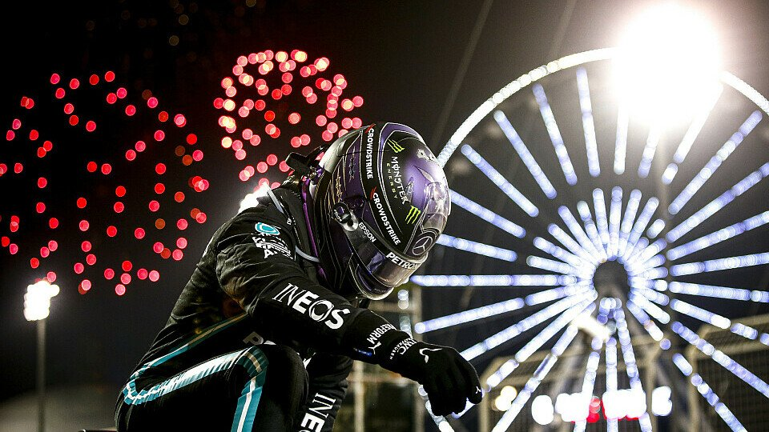
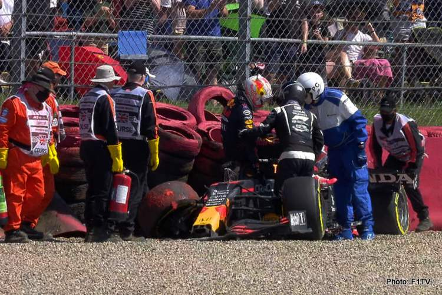
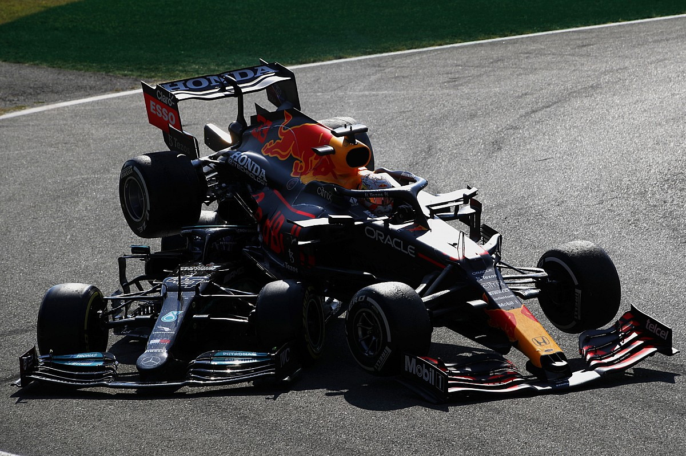
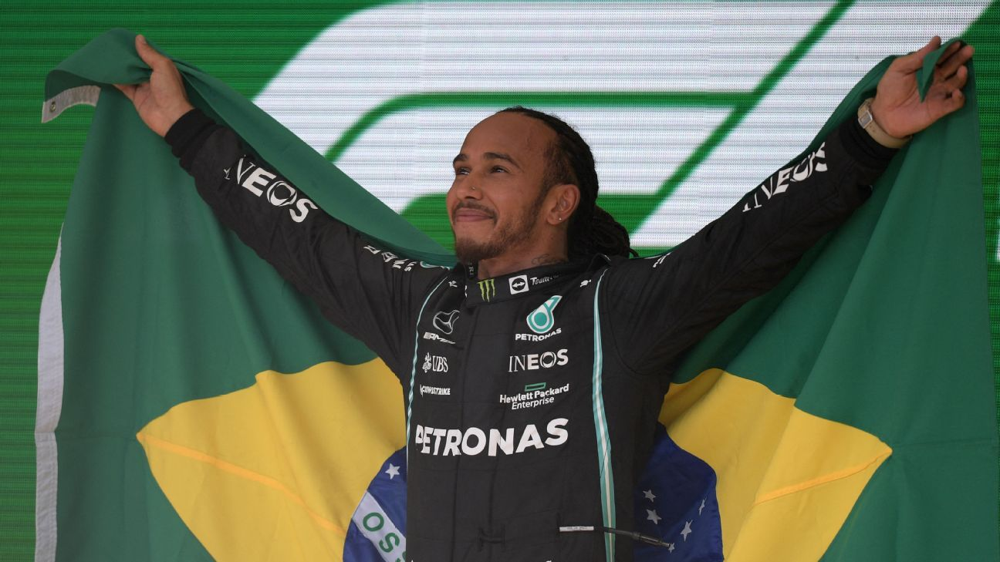
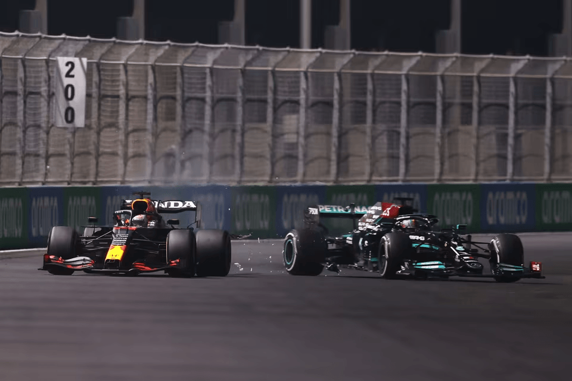
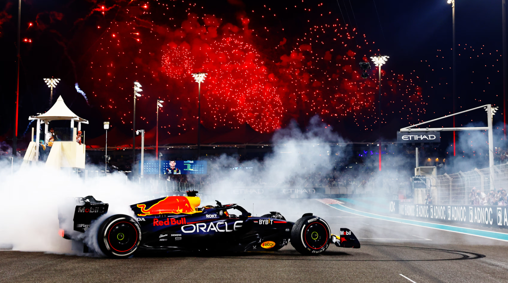

🏁 O Cartão de Visitas: GP do Bahrein
A temporada já começou com uma disputa de tirar o fôlego. Max fez a pole, mas a Mercedes usou a estratégia para colocar Lewis na frente.
Nas voltas finais, Max ultrapassou Lewis, mas por fora dos limites de pista. Ele teve que devolver a posição e não conseguiu atacar novamente. Ali ficou claro: a Red Bull tinha o carro, mas a Mercedes tinha a astúcia.

💥 O Ponto de Ruptura: Silverstone
Silverstone (GP da Inglaterra): Na primeira volta, os dois se tocaram na veloz curva Copse. Max bateu violentamente no muro (impacto de 51G), enquanto Lewis, mesmo punido, venceu a corrida e comemorou intensamente, o que gerou profunda mágoa na Red Bull.

⚡GP de Monza: Carro sobre Carro
Monza (GP da Itália): O "troco". Após paradas nos boxes lentas, os dois se encontraram na primeira chicane. O carro da Red Bull montou em cima da Mercedes de Lewis, com o pneu de Max tocando o capacete de Hamilton (salvo pelo Halo). Ambos abandonaram.

🌧️ A Aula de Estratégia e Chuva: GP da Rússia
Lando Norris liderava, mas a chuva no final mudou tudo. Lewis tomou a decisão certa de parar, venceu sua 100ª corrida e assumiu a liderança. Max, que largou em último por trocar o motor, escalou o pelotão de forma heroica para terminar em 2º, limitando o prejuízo.

🏆A Ressurreição de Lewis: Interlagos
Talvez a maior exibição de pilotagem de Hamilton na carreira. Após ser desclassificado da classificação por uma irregularidade na asa traseira e sofrer punição por troca de motor, ele parecia fora da disputa.
Lewis largou em último na Sprint Race e terminou em 5º. No domingo, largou em 10º e caçou Verstappen na pista. Mesmo com Max "espalhando" a trajetória para se defender, Lewis o ultrapassou sob o delírio da torcida brasileira, em uma vitória que muitos consideram o ponto de virada psicológica.

🌵O Caos no Deserto: Arábia Saudita
A penúltima corrida foi o ápice da tensão. Foi uma sucessão de bandeiras vermelhas, relargadas e incidentes.
LO "Break Test": Lewis bateu na traseira de Max quando o holandês tentava devolver uma posição de forma estratégica. Os dois terminaram a corrida empatados em pontos (369,5 a 369,5), algo que não acontecia desde 1974.

🏟️ O Gran Finale: Abu Dhabi 2021
O mundo parou para ver a última corrida. Lewis dominou 95% da prova e estava a caminho do 8º título, até que o acidente de Nicholas Latifi mudou a história do esporte.
O diretor de prova, Michael Masi, permitiu que apenas os retardatários entre Lewis e Max passassem o Safety Car, autorizando a relargada para uma última volta.
Com pneus novos, Max não deu chances a Lewis, que estava com pneus gastos. A ultrapassagem na curva 5 selou o primeiro título de Verstappen e mudou para sempre a trajetória de ambos.
Por que 2021 foi diferente? A estatística mostra o equilíbrio absurdo: eles terminaram em 1º e 2º em 14 das 22 corridas. Se um cometesse um erro mínimo, o outro vencia.